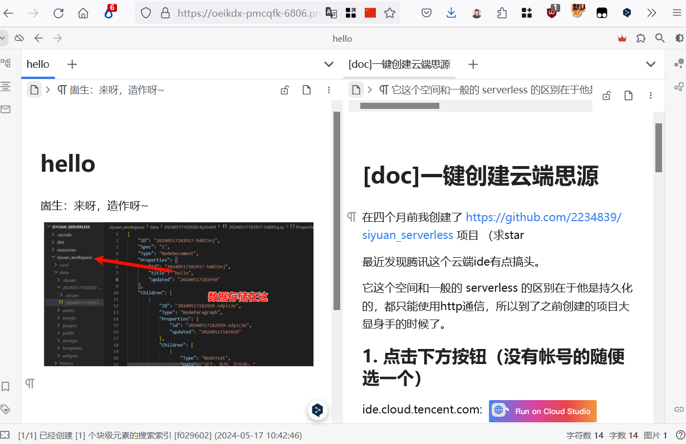
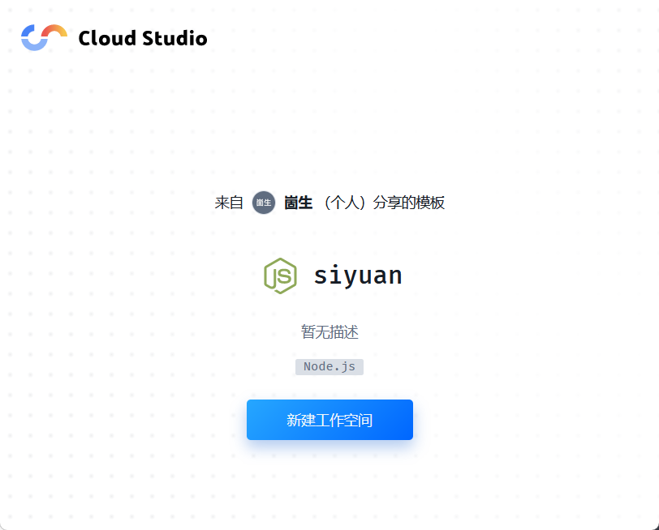
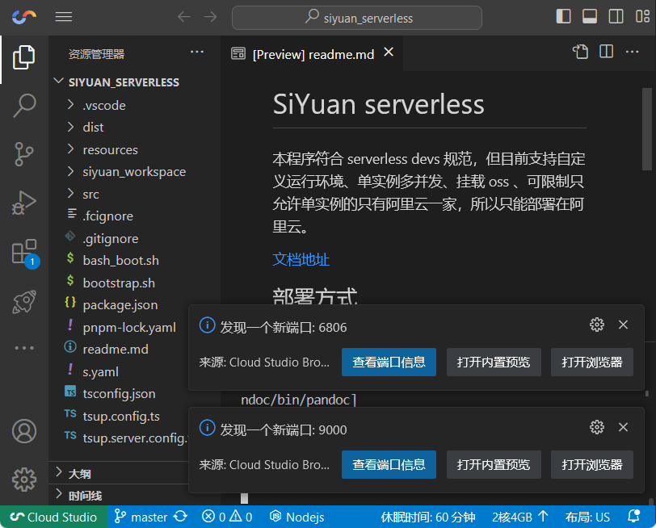
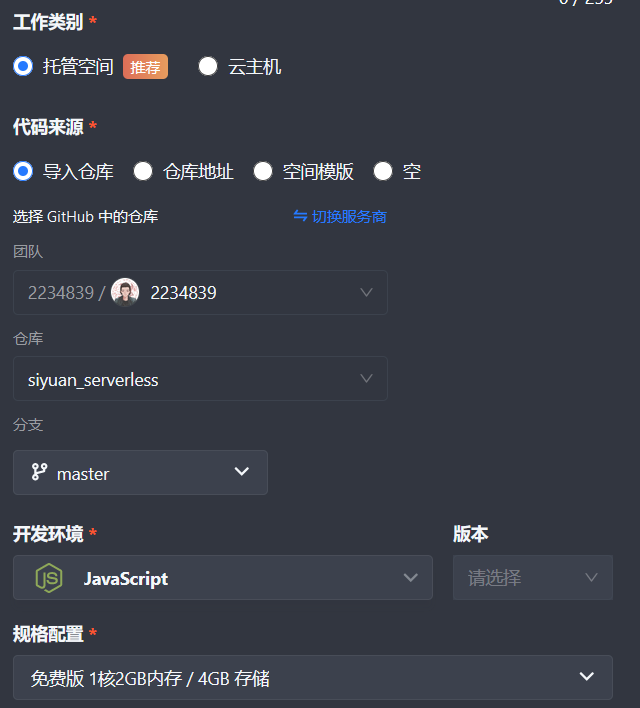

一键创建云端思源

在四个月前我创建了 https://github.com/2234839/siyuan_serverless 项目 （求star
最近发现腾讯这个云端ide有点搞头。
它这个空间和一般的 serverless 的区别在于他是持久化的，所以到了之前创建的项目大显身手的时候了。
1. 点击下方按钮（没有帐号的随便选一个）
ide.cloud.tencent.com:
 https://ide.cloud.tencent.com/templates/52xp20mfy0w
https://ide.cloud.tencent.com/templates/52xp20mfy0w
cloudstudio.net:
https://cloudstudio.net/templates/52xvcorqps0
点击新建工作空间

等待.... , 加载好后会自动运行程序，右下角弹出这两个提示就可以使用了。

直接点击端口为 6806 的‘打开浏览器’, 9000端口也是可以使用的，两个的区别是6806端口采用的是思源自身的ws来同步，长时间没有客户端连接服务端会自动退出。而9000则是我写的http轮询同步，在cloudstudio中可以使用websocket所以直接使用6806的就行。
authorization code默认为 test，可以自行修改，配置在 bash_boot.sh 文件中
如果程序关闭了，在终端输入bash ./bash_boot.sh 回车运行即可
大家可以尝试右方的连接 https://xnpoli-lvjeay-6806.preview.myide.io/stage/build/desktop/?r=bzwrrwp ，如果进不去的话说明我这边关闭了。鉴权码为 test
上面创建的是2c4g，每个月腾讯只给了3000分钟的免费额度，可以自行 fork我的仓库，然后创建一个1c2g的免费空间。
